- About
- Diary
- People
- Events
- Reading
- Writing
- Meals
- Meetings
- Search

1835, Jan. 1. Th.History, p. 5/2. Princess, p. 218. Museumnae: Wilson calls: call on Rodd. 61 ½ / 69 ½
2. F.No Mosheim. Princess, p. 342. 57 / 66
3. Sa.Write to Peel. Mosheim, çala. Princess, p. 383, fin. Call at Rivington’s. Letter from Peel.57 / 66 ½
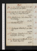Jan. 4. Su.Constipe. Artevelde, p. 33. Call mrs Rickman; adv. brother. 53 ½ / 64 ½
5. M.Artevelde, p. 186. Jadis & N G call: mrs Hogg & 2, Percy & Emily dine. 53 / 63
6. Tu.Artevelde, p. 287. Call on Hume, & Moxon, & Bulley. Fog, 3 days.55 ½ / 63
7. W.Artevelde, Vol. II, p. 80. 54 / 63
8. Th.Exchequere. Artevelde, p. 176. Uwins sups. 52 ½ / 63
9. F.Exchequere. Artevelde, p. 204. Call on Blessington; adv. D’Orsay. 52 / 64
10. Sa.Atonement, p. 8/2. Artevelde, p. 272, fin. Theatre, King’s Seale. 60 / 66
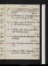Jan. 11. Su.Atonement, p. 9. J Faithful, p. 155. Jerrold & J Jones call: call on mrs Picken. 58 ½ / 65
12. M.Atonement, p. 10. Museum; Purgatorye. A Smith calls: J Jones sups. 61 / 67
13. Tu.History, çala. Sir Thos More. Morris sups. Write to R S, for Jones. 58 ½ / 66
14. W.History, çala. Fraser, çala. Wilson sups. Wait for Bulley. 62 / 70
15. Th.Atonement, çala. Call on Rogersn. Rev. Smith calls. 64 / 60 / 68
16. F.Rain. Museum; adv. Hornee. Ayesha, p. 86. 57 / 68 ½
17. Sa.Museum; Wake, on Purgatorye. Ayesha, p. 126. Emily dines. 54 ½ / 62 ½
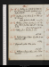Jan. 18. Su.History, p. 5. Write to M W S, on her Literary Character. Ayesha, p. 204. Call on Booth. 51 / 68 ½
19. M.Ayesha, p. 317; Vol. II, p. 50: Elia, çala. A S calls. Bills delivered, Exchre.55 ½ / 67
20. Tu.History, 4 lines. Ayesha, p. 178. Theatre, Trip to Jubilee; adv. Linc. Stanhope & F Re. Snow: Frost 2 dyso48 / 61
21. W.History, p. 7. Ayesha, p. 275. 46 / 62
22. Th.Preliminary, 1 page. Ayesha, p. 330. Macrone calls. 50 / 67
23. F.Elements, çala. Elia, çala. 51 ½ / 65
24. Sa.William, 2 pages. Elia, çala. Call on Macrone. 51 ½ / 66
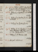Jan. 25. Su.William, 16 lines. Ayesha, Vol. III, p. 73. Dine at Rogers’s, w. col. Fox, Eastlake & Kenney: Jerrold calls}. 54 / 67
26. M.History, p. 9. Ayesha, p. 148. A Smith sups. 60 / 69
27. Tu.History, p. 11. Ayesha, p. 202. Call on Moxon. 55 / 69
28. W.History, p. 13/2. Ayesha, p. 284. 55 / 65
29. Th.History, p. 14. Ayesha, p. 335, fin. Call on Macronen: sup at Reynolds’s, w. F & R, & Sophia Boaden. 54 / 65 ½
30. F.History, p. 16/2. Macrone calls. 56 ½ / 69
31. Sa.Languid: disordered. 56 ½ / 66
Feb. 1. Su.History, p. 18/2. Call on La Stepney; adv. Macgin: Jas Leigh calls. 56 ½ / 69
2. M.Indisposed. Macrone calls: seek Ollier: Emily dines; adv. mrs Martineau. 57 ½ / 69 ½
3. Tu.History, p. 19. Meet Miss Ayrton: dine at Uwins’s, w. Fox, Dr Stewart, Smith, Mason, Hardy, T Uwins & T Ht. 59 / 69
4. W.Constipe. History, çala. 57 ½ / 67
5. Th.History, çala. N G calls: dine at Nokes’s, w. Uwins, Aldises, sir Robert Sydney, &c. 56 / 66
6. F.History, çala. Call on Bulley (Treasury Minute): G Jones (actor) calls. Nov. 5. 51 / 65 ½
7. Sa.Deorsume. History, çala. Hume on Natural Religion. A Smith calls. 55 / 68
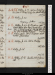Su. 8. Feb.History, p. 21/2. Call on Blessington(adv. D’Orsay) & Ayrton (adv. Bradley)53 / 72 ½
9. M.History, p. 22. Treasury Letter. 53 / 70 ½
10. Tu.History, p. 23. Sir R Sydney calls na: M W S dines; adv. Percy & mrs Hogg: theatre, 1/2 Somnambula, & Death & Doctor; adv. T Ht, 2 Mortons & Spencere. Snow.50 / 66
11. W.History, çala. Call on Macrone: meet Morton: S Gent dines. 49 / 66 ½
12. Th.History, p. 24. Call on Bulley. 56 ½ / 63
13. F.History, p. 26. 52 ½ / 67
14. Sa.History, p. 28/2. Caunter & Miss James call. 56 ½ / 67
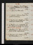Feb. 15. Su.Saved, p. 2. Dine at Rogers’s, w. Hallam, sir Robert,Lockhart, Clericus, Eastlake & Staunton. 56 / 67
16. M.Saved, p. 4/2. Wilson sups. 59 ½ / 66 ½
17. Tu.Saved, p. 5. Call on mrs Payne: Emily dines; adv. Kenney. 59 / 65
18. W.Providence, p. 2/2. A Smith calls: Mesds Martineau & Kentish at tea. 54 / 67
19. Th.Providence, p. 3/2. Sir R Phillips calls: Dine at Rogers’s, w. Maltby, Cary & Kenney. Parliament meets: Abercromby, Speaker, 316 to 306e.55 / 67
20. F.Providence, p. 4. Call on Sir R Sydney. Gaskels at tea: invité Caunter’s. 52 ½ / 68 ½
21. Sa.Providence, p. 6/2. Theatre, Lestocqe. Heir Presumptive, p. 78. 52 / 68
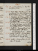Feb. 22. Su.Providence, p. 7. Heir Presumptive, p. 247. 56 / 68
23. M.Wind. Costive. Providence, p. 8. Presumptive, p. 299. Dine at Rogers’s, w. Wordsworth & fils, Cary & Kenney. 55 / 64
24. Tu.Providence, p. 10/2. Presumptive, Vol. II, p. 86. Call on Pickens: theatre, Hazard or Die, & Miser’s Daughter; adv. R Re: A Smith calls. 53 / 69
25. W.Providence, p. 10. M Chronicle. Sup at Caunter’s, w. Lovers, mrs Daniel, Mrs Gent, Woods, 3 Stevensons & Maclure. Presumptive, p. 236. 56 ½ / 65 ½
26. Th.Faith, p. 2/2. Presumptive, p. 315. Mrs Hudson dines; adv. Hudson. Amendment, 309 to 302e.58 / 72
27. F.Constipe. Faith, p. 2. Presumptive, Vol. III, p. 180. Call on Dr Beattien, & miss Northcotena: Thrupp sups. 60 / 70
28. Sa.Faith, p. 3. Presumptive, p. 253. Call on Dr Beattie. 58 / 65
Mar. 1. Su.Faith, p. 5/2. Presumptive, p. 314, fin. Fox (Finsbury), w. Mesds Gaskel & Martineau; adv. S Smith. Snow.58 / 64 ½
2. M.Faith, p. 7/2. Wordsworth calls n: call on Pickens: L Stanhope’s, w. mesds Skinner & Porter, Willis poet, Holm, mrs Wood, M W S. 60 / 66
3. Tu.Faith, p. 8/2. Pepys, p. 55. M W S breakfasts & sups: call on Snow, Lit. Fund. 60 / 64
4. W.Genius, invent. D’Arblay, p. 140. M W S dines & sups. 55 / 69
5. Th.History, p. 31/2. D’Arblay, p. 198. A Sm. calls: M W S tea & supper; adv. M G. 53 / 64
6. F.History, p. 32. D’Arblay, p. 360. Call on Macrone: M W S dines. 62 ½ / 69
7. Su.eHistory, p. 33/2. D’Arblay, Vol. II, p. 253. 54 / 64
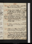Mar. 8. Sa.eLanguide. History, çala. D’Arblay, p. 400; Vol. III, p. 44. 49 ½ / 68 ½
9. M.History, p. 34. D’Arblay, p. 177. Beattie calls: dine at L Stanhope’s, w. Haydon, C Sheridan & Martin; adv. Owen, Babbage, Willis & Hall. 57 / 69
10. Tu.History, p. 35/2. D’Arblay, p. 263. Call on Pickens: Skinner’s, w. La Morgan, miss Sheridan, mrs Jas Moore, Merchison, sir A Crichton, Willis poet, Babbage, mrs SomervillesDouloureuxe.52 ½ / 66
11. W.Nature, p. 2/2. D’Arblay, p. 334:Sir C Morgan calls. 57 / 68 ½
12. Th.Nature, p. 4/2. D’Arblay, p. 436, fin. M W S sups. 55 ½ / 67
13. F.Nature, p. 4. Pepys, p. 101. Standish Mott, mrs Picken, & mrs Gaskel call. oAppointment of L Londonderry debde55 ½ / 68 ½
14. Sa.Pepys, p. 125. Call on La. De Lislenit. Suffolk Str; Rogers, Martins, sir C M & femme, A Cunningham, E Prentis, Mortons, Hofld, Landseer & Hill: Hargrave sups. Ill, with a coughe. 53 / 64
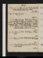Mar. 15. Su.Pepys, p. 152. Emily dines; adv. M W S & Wilson. Write to Jos. Snow. 57 ½ / 65 ½
16. M.Pepys, p. 217. 58 / 67 ½
17. Tu.Pepys, p. 290. Meet Owen & Monks: Skinner’s, w. Morgans, Chapman, m. Sheridan, Mackintosh, Montgomery, Martins, Babbage, M W S, Wood, La. Stepney. mrs Picken calls. La. Stepney58 ½ / 68 ½
18. W.Pepys, p. 318. M W S at tea; adv. Scharf. Call on Ant. White, confined one week. 54 ½ /
19. Th.Pepys, p. 332. M W S dines: Wilson sups. 69
20. F.Pepys, p. 362. M W S & Ant. White call. 65
21. Sa.Marshal Ney, p. 28. M W S at tea; adv. Ant. White. 65 / 71
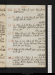Mar. 22. Su.Pepys, p. 392: Ney, p. 73. M W S dines. 64 / 68
23. M.Pepys, p. 438: Ney, p. 96. M W S at tea; adv. Sir C Aldis. 60 / 66
24. Tu.Pepys, p. 498. Ney, p. 148. See H Ellis: M W S, ppc: Gaskels & miss Bakewel au soir. 63 ½ / 61 ½ / 68 ½
25. W.Pepys, Vol. II, p. 64. Dine at Gaskel’s, w. Bakewels, Maccance, Sd Smith & mrs Grimstone. 53 ½ / 66
26. Th.Pepys, p. 100. Call on La. Morgann: mrs Picken calls: theatre, Patrician & Parvenue. Write for mrs Picken. 56 ½ / 66 ½
27. F.Pepys, p. 182. A Smith calls: call on miss Northcotena. 58 ½ / 66 ½
28. Sa.Nature, p. 6. Pepys, p. 212. Seek Wordsworth: meet F R: dine at Rickman’s, w. W Leys, Woods, Chaplain, Romilly, Vardon & Nightingale. 55 ½ / 66
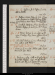Mar. 29. Su.Nature, p. 8. Pepys, p. 252. Call on Booth. 53 ½ / 69
30. M.Nature, revise. Pepys, p. 304. G Jones calls: Skinner’s, w. Dedel, Hallam, Willis, 2 miss Porters, mrs Floyer, Macfarlane. R Sharp dies. 52 ½ / 68
31. Tu.Constipe. Write L Fra. Egerton, on Picken. Pepys, p. 348, fin. Mrs Hogg dines. 55 / 67 ½
Apr. 1. W.Warm. Evelyn, p. 60. Sass’s, w. T Uwins, Beasley, Cary, Owen, G Jones, Wheatstone. 61 / 69
2. Th.Cold & hote. Evelyn, p. 102: Prairies, p. 110. Call on Ant. Whiten. appropriation, Church Revenues, Ireland, 4 days’ debate, 322 to 289e.61 ½ / 72
3. F.Prairies, p. 335, fin. Wilson calls: S Gent dines not; adv. Wood. Deorsume.62 / 70 ½
4. Sa.Evelyn, çala. Call on Bulley. Contract for Watche. Sup not at Rickman’s; adv. Paynes, Dyers, Manning. 58 ½ / 72
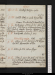Apr. 5. Su.Constipe. Evelyn, çala. o59 / 71
6. M.Constipe. Evelyn, çala. N G at tea. Dream, Mackintosh & Cæsare. 60 / 70 ½
7. Tu.Exchequere. Lodore, p. 86. Call on Rogersn: Martin’s, w. A Cunningham, miss Roberts, Caunter, Knowles, Hayward, Morgan, Macallum, Brookes, Cruckshank, Owen. Lodore Publishde56 ½ / 70
8. W.Indisposede. Lodore, p. 207. Ministers resigne.Falle. 59 / 69
9. Th.Lodore, p. 300; Vol. II, p. 68. M Gaskel & Dr Alexander at tea. 61 ½ / 67
10. F.Lodore, p. 188. Call on G Dyer. 69
11. Sa.Lodore, p. 297; Vol. III, p. 56. Vardon & A Smith call: Gaskel’s, w. Ow[en?], Alexr & mrs Yates: L Stanhope’s, w (O’Connel) Fox, Canino, Fabris, Elmore59 / 69
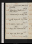Apr. 12. Su.Genius, invent. Lodore, p. 220. G Jones calls. 54 / 71
13. M.William (from 24 Jan), pp. 3, 4, 5, 6. Lodore, p. 311, fin. 58 / 66
14. Tu.William, revise. Jadis calls: Emily at tea. 59 / 71 ½
15. W.Constipe. Evelyn, çala. Percy & M W S call. 59 ½ / 67
186. Th.Creator, p. 1. Evelyn, çala. Snow. 55 ½ / 66
17. F.Evelyn, çala. Dr Alexander calls. 52 / 65
18. Sa.Evelyn, çala. Hume calls. Melbourne, Treasurye.51 ½ / 67 ½
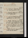Apr. 19. Su.Creator, revise. 53 / 65
20. M.Creator, p. 3/2. Clarendon, Life, p. 84. Sup at Reynolds’s, w. F R. 58 / 67
21. Tu.Languide. Creator, p. 3. Clarendon, p. 146. G Jones calls. 60 / 66
22. W.Creator. p. 5/2: Mixed Character, p. 1. Clarendon, p. 176. Call on Gaskel. 60 ½ / 70
23. Th.Weather. Clarendon, p. 198. Alexander calls na: dine at Hume’s, w. O’Hanlon, Spear, Colliers, Tollemache & Tatham. 65 / 68
24. F.Mixed Character, p. 3/2. Clarendon, p. 4247. Soir, Gaskels, w. 2 Alexanders & M J. 62 / 69
25. Sa.au lit, Mixed Cha., p. 4. Scargil, p. 112. M W S calls; adv. A Smith. 58 ½ / 64
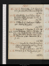Apr. 26. Su.Mixed Cha., p. 6. Scargil, p. 227, fin. A Smith & Macrone (proof) call. 56 / 66 ½
27. M.Mixed Cha., p. 7/2: Nature, 1 page. Wrightson (Truth-Seer) calls: theatre, Alexander ye Greate. 53 ½ / 66 ½
28. Tu.Nature, p. 9/2. Exchequere. Flather calls: M W S & Percy dine. 53 ½ / 66 ½
29. W.Religious, p. 1. Clarendon, p. 264. Call on mrs Rickman: Sass’s, w. 4 Martins, 2 Uwins, Croly, Dr Stuart. Nokes, Atherston, Croly,mrs Wood, Holm, Wheatson, Scharf. Mortono56 / 65
May 1. F.Miracles, p. 1. Transfusion, p. 42. Call on La Blessington (adv. Orsay) & miss Northcote. Jadis calls. Transfusion Publishede.56 / 66
2. Sa.Miracles, p. 3. Transfusion, p. 19856 / 67 ½
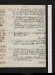May 3. Su.Miracles, p. 5. Transfusion, p. 306; Vol. II, p. 58. B Kenney calls & T: Emily sups: call on Booth; adv. Rds’s. 59 ½ / 67 ½
4. M.Miracles, p. 6/2. Transfusion, p. 188. Exhibition; adv. Jerdan, Joseph, G Jones, Uwins, Theobald, Leigh; Blanchard, Thruppe. 56 / 66
5. Tu.Miracles, p. 8. Transfusion, p. 317. G Jones calls: N G at tea: mrs Picken. 60 ½ / 66
6. W.GScriptural G, p. 1. Transfusion, p. Vol. III, p. 255. 60 ½ / 68
7. Th.Scriptural, çala. Write to La. Blessington. Blanchard calls: call on Beattie. 61 / 70
8. F.Constipe. Clarendon, p. 127. Call on mrs Ayrton na: Royal Institution (Wheatstone); adv. Babbage, Uwins, Stuart, Faraday & Battye . 59 ½ / 70
9. Sa.Agreeable Lassitudee. CScriptural, çala. Clarendon, p. 146. Black teae64 / 73
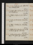May 10. Su.Scriptural, çala. Call on Pickens: W Hopwood calls. 62 / 72 ½
11. M.Constipe. G Jones at tea; adv. mesds Gaskel & Martineau. 62 ½ / 68 ½
12. Tu.Collapsee. Scriptural, çala. M W S at tea. 63 ½ / 70
13. W.Plutarch, Alexander: Clarendon, p. 173. 63 / 68 ½
14. Th.Rain. 2 Curtius, &c: Clarendon, p. 200. 61 / 71 ½
15. F.Scriptural, p. 3/2. Clarendon, p. 226. Call on Macrone, for M Jn: M W S sups. 64 ½ / 68 ½
16. Sa.Scriptural (God of Hebrews), çala. Clrendon, p. 282. G Jones calls n: Exhibitione. 61 / 68 ½
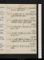May 17. Su.Scriptural, p. 4/2. Clarendon, p. 333. M W S dines. o61 / 68
18. M.Scriptural, p. 4. Clarendon, p. 400. S Gent & Daniel, jr dine. 62 / 71
19. Tu.Scriptural, p. 6/2. Clarendon, p. 422. Museum; Arriane. G Jones calls n. 63 / 69 ½
20. W.Scriptural, p. 7/2. Clarendon, p. 446: Nelson calls. 63 / 71
21. Th.Constipe. Scriptural, 9 lines. Clarendon, p. 520. 63 / 68
22. W. F.Constipe. Effects of Doctrine, p. 1. Ion, (Talfourd), p. 107: Clarendon, p. 549. 61 ½ / 68 ½
23. Sa.Effects, p. 3/2. Ion, p. 204, fin. Emily dines. 63 / 69 ½
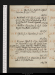May 24. Su.Effects, p. 5/2. Write to Talfourd. Clarendon, p. 599. (Bon) e66 / 69
25. M.Waistcoat, chille. Effects, çala. Clarendon, p. 640. Dine at Gaskel’s, w. Shepherd, Hawkeses, Banks, Hayward, Bailey. 67 ½ / 70 ½
26. Tu.Weather. Clarendon, p. 694. Call on Wright, Vizatteli’s. (Lardner’s) 62 ½ / 70
27. W.Effects, p. 5. Clarendon, p. 743. 61 ½ / 69 ½
28. Th.Nervouse. Effects, p. 6, fin. Write to Wilson. Clarendon, p. 779. Soir, Gaskel’s, Bowring, L Aikin, Grimstone, Hawkes’es, Owen, Hunter, Holmes, Martineau, Jones. mrs Grote, Pemberton. 62 / 68 ½
29. F.Scriptural, p. 8. Clarendon, p. 794. Theatre, Sonnambula (Malibran); adv. Spencere. o59 ½ / 67 ½
30. Sa.Scriptural, p. 11. Clarendon, p. 846. Call on miss Northcote. 58 ½ / 68
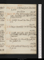May 31. Su.Scriptural, p. 13/2. Clarendon, p. 906. W Smith dies.58 ½ / 68
June 1. M.Clear, but tremulouse. Religious, çala. Clarendon, p. 917: Ellis on do, çala. A Harwood at tea. 59 ½ / 66 ½
2. Tu.Constipe. Burnet, Own Time, p. 121 to 144. 61 ½ / 67
3. W.Coliquee. Burnet, p. 228. Mrs Hogg dines. 62 / 68 ½
4. Th.Constipe. Humility, çala. Burnet, p. 300. Beattie calls. Theatre, Gazza Ladra (Grisi; rain)e. 64 ½ / 72
5. F.Humility, p. 2/2. Burnet, p. 396. N G at tea: Gaskels, soir. 63 ½ / 68 ½
6. Sa.Chill, waistcoat. Burnet, p. 439; Vol. II, p. 34. 63 ½ / 72 ½
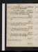June 7. Su.Humility, p. 3. Jew of Malta, act 1: Burnet, p. 63. Call on Booth. Hot weather, 6 days. 64 ½ / 73
8. M.Head-achee. Jew of Malta, act 2. Burnet, p. 80. R T & fille call: Hudsons at tea. 68 / 73 ½
9. Tu.Constipe. Jew of Malta, fin. Burnet, p. 162. 68 / 71
10. W.Constipe. Humility, p. 4/2. Burnet, p. 277. Meet R Graham: he calls na. 67 ½ / 76
11. Th.M Chronicle, 11 1/2. Burnet, p. 332. Theatre, Good Husbands; adv. Spencere. o69 / 72 ½
12. F.Burnet, çala. Call on Bulley. Mesds Gaskel & Pilkington soir; adv. Wilson. 69 / 75
13. Sa.Burnet, p. 421. 65 ½ / 72
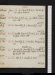June 14. Su.Burnet, p. 470; Vol. III, p. 58. Call on Pickens. 67 / 72
15. M.Burnet, p. 199. Jas White & Macrone call. 66 ½ / 73
16. Tu.Humility, p. 5/2. Burnet, p. 306. 66 ½ / 71
17. W.Constipe. Burnet, Vol. IV, p. 42: Sextus & Cassia. Nelson calls. 68 / 71
18. Th.Humility, p. 7. Temple, Memoirs, p. 116. W Cobbet dies .67 / 71
19. F.Invent Life. Humility, p. 8/2. Temple, p. 188. Robt Graham & fils, Flather & Marcellus Newton call. 64 / 69
20. Sa.Life, p. 3/2. Temple, p. 228. 66 ½ / 70
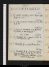June 21. Su.Life, p. 4/2. Temple, p. 243. o65 / 72
22. M.Constip. Temple, p. 346. Wilson sups. Sheffield, çala. 66 ½ / 70 ½
23. Tu.Chill, waistcoate. Temple, p. 392; Part II, p. 86. 67 / 65 / 70
24. W.Life, p. 6. Temple, p. 173, fin. Dine at Gaskel’s, w. rev. Bakewel. Rain, 2 days. 64 ½ / 70
25. Th.Humility, p. 9. Brydges, Milton, p. 71. Leic. Stanhope calls. 60 / 67 ½
26. F.Humility, p. 11. Life of Kean, Vol. I. 61 ½ / 70 ½
27. Sa.Humility, p. 12/2. Life of Kean, Vol. II. Museum; Roger Northe. Professor Mylne calls: meet Haydon & Galloway. Charles Mathews dies.61 / 68
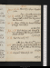June 28. Su.Humility, 1 page. Brydges, çala. Severe cold weather.59 / 63, 4 / 70
29. M.Liberty, p. 3. Brydges, çala. Chawner calls (w. Wood): mrs Hogg dines; adv. Macrone. 61 / 68
30. Tu.Straine. Liberty, fin: Invent Motives to Profess. Burnet, p. 71. 63 / 64, 3 / 72
July 1. W.Heat. Religion, çala. Burnet, p. 140. L Badams calls (Mergez); theatre, Scholar; adv. R Re. 67 / 66, 5 ½ / 71
2. Th.Heat. Burnet, p. 186. Letter from Pemberton & Co. 66 / 72 ½
3. F.Call on Bulley. Write to Pemberton & Co. Burnet, p. 218. Soir, R R’s, w. F R, Kenney, Beasley, Dyce, &c. 65 ½ / 71 ½
4. Sa.Languide. Burnet, p. 281. 66 / 70 ½
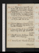July 5. Su.Religion, p. 3. Burnet, p. 334. Col. Jones calls: meet Rickman: dine at Gaskel’s, w. Fox, sir G Cockburn & Bakewel: invité à Rogers. 66 ½ / 70
6. M.Hebetee. Burnet, p. 374. Wilson, Gaskel & G Jones call: N G at tea: soir Lardner’s, w. Guiccioli, Canino, La. Owen, Wise & Wallace. 65 / 70
7. Tu.Languid; Nervouse. Burnet, Vol. V, p. 106. Mylne calls: Aldis au soir. 65 ½ / 70
8. W.Nervouse. Exchequere. Burnet, p. 134. Mrs Hogg & fille dine: H of Commons, Irish Poor Laws; O’Connel, &ce. 66 ½ / 73 / 65
9. Th.Languide. F Kemble, p. 250. Tea Rickman’s, w. M J: Wilson sups. Rheumatice. 67 ½ / 70 / 66
10. F.F Kemble, p. 312. Exchequere. Theatre, Fidelioe. meet Sir R Sydney. 64 ½ / 71 ½ / 65
11. Sa.Burnet, p. 156: F Kemble, Vol. II, p. 94. 67 / 69 ½ / 66
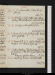July 12. Su.Rheumatice. F Kemble, p. 286, fin. 64 ½ / 71
13. M.Coleridge, Table Talk, çala. Call on Bulley (Whitehall Yard): Caunters at tea. 66 / 70 ½ / 66 / 74
14. Tu.Coleridge, çala. Gaskel at tea. 63 ½ / 69 / 67 ½ / 70
15. W.Burnet, p. 214. Jas Ross calls: Daniel & mrs Gent sup. 65 / 72 ½
16. Th.Burnet, p. 224. Call on Bulley; adv. Bedford: mrs Thomas & fils call. 66 / 70
17. F.Call on Bulley (Whitehall Yard): dine at Caunter’s, w. M J & Dr Taylor, Dublin; adv. Killick. Wellington (reported) to Windsore. 67 / 71 ½
18. Sa.Quarterly Review. Campbel calls. 69 ½ / 72 ½
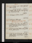July 19. Su.Werter, çala. Capel Lofft calls: call on Booth. oCurran removede.64 / 70 ½
20. M.Werter, çala. Theatre, Maid of Croisseye: Blanchard sups. 66 ½ / 75
21. Tu.Exchequere. Lardner, soir, not. 74 / 72 / 74
22. W.Exchequere. Wilson sups. Divide Irish Appropriation Bill, 3 days’ debate, 282 to 319. July 21, 22, 23e.69 / 75
23. Th.Posthume, p. 2/2. G Dyer, Rowbothamn & Mylnen call: dine at M W S’s, Harrow, w. M J & Julia Robinson. 69 / 72 ½
24. F.Write to Leigh Hunt. Wilson calls: Jas White at tea: Gaskel au soir. 69 / 72
25. Sa.Jas Ross calls: R R & Kelly call: call on Anthony Whiten: Campbell sups. meet Bedford (if claims). 69 / 73
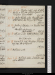July 26. Su.Mylne calls n: sup at Ant. White’s, w. M J; adv. G White & femme, & Fincham. G Jones calls n. 69 ½ / 74 ½
27. M.Childe Harold, çala. Thrupp calls: M W S dines; adv. Percy & Mrs Hogg. 68 / 73
28. Tu.Bride of Abydos, C. I. Martin, soir, not. Attempted assassination of Louis Phillipee.69 / 79
29. W.Abydos, çala. M W S & Wilson call. counsel to be heard on Corporation Bill, Lordse.M T Sadler dies.69 / 75 ½
30. Th.Burnet, p. 238. Meadows & Trelawney sup; adv. W Hopwood. 68 / 77 ½
31. F.Rabelais, çala. 69 / 67 ½ / 72
Aug. 1. Sa.Rabelais, çala. Landseer calls. call on A Whiten. 66 ½ / 72 ½
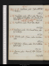Aug. 2. Su.Rabelais, çala. Call on A Whiten, & Pickens. 68 / 71
3. M.Rabelais, çala. G Dyer calls: Panorama, Elephant-Hunting; adv. Daniels, Gent, Woode. Evidence admitted on Corporation Bill, Lds, 124 to 54e.66 ½ / 68
4. Tu.Rabelais, çala. Meet Edw. White. 65 / 69 ½
5. W.Rabelais, çala. Kinchant dines; adv. N G & Emily. 65 / 72
6. Th.H Tooke, çala: Ossian, çala. Landseer calls. 68 / 72 ½
7. F.Bp Fisher: Ossian, çala. Meet A White: Gaskel calls. 68 ½ / 71
8. Sa.Bacon, çala: Burnet, Life. Hudson at tea. 63 / 70 / 66
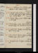Aug. 9. Su.Posthume, p. 3. H Tooke, çala. Landseer calls: London Bridgee. 62 ½ / 70 ½
10. M.Tardif: alertee. Posthume, 10 lines. H Tooke, çala. Nelson calls: Trelawney sups. Baker Streete. 66 ½ / 71 ½
11. Tu.Bacon, Essays, çala. Flather calls, w. Kennedy. 68 ½ / 74 ½
12. W.Bacon, Essays, çala. Call on Peak A M: T Campbel sups; adv. Kinchant & mrs Picken. 69 / 75 ½
13. Th.Write to T T. Theatre, Provoked Husbande: Emily sups. 67 / 72
14. F.Hunchbacke. Hudson calls (on Jas Ross): Meadows sups: G Dyer calls na. 63 / 70
15. Sa.Campbel, çala. Beckford, Alcobaça, p. 140. 64 ½ / 71 ½
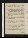Aug. 16. Su.Albcobaça, p. 224, fin: Little Pedlingtone. London Bridgee. o68 / 72 ½
17. M.Parrhesiae. Don Juan, st. 66: Prior, çala: Burnet, p. 270. Meet Scholfield (Melbourne): Caunters at tea. 69 / 72 ½
18. Tu.Nervouse. Don Juan, st. 161: Burnet, p. 292. Surry Zoological: theatre, My Late Friende. 68 / 71
19. W.Don Juan, st. 222: Burnet, p. 314. Call on miss Northcote. 67 / 71
20. Th.Don Juan, C. II. Call on La. Blessington; adv. Orsay & F R. 69 / 72
21. F.Unelastic. Deorsume. Don Juan, C. III, IV: Queen of Bohemia, p. 88. L John Russel on Suppliese. 69 / 73
22. Sa.Queen of Bohemia, p. 162, fin. 69 / 71
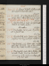Aug. 23. Su.Royal & Noble Authors, cala. MesLeigh & Hamilton dine. 67 ½ / 70
24. M.Constipe. Life of Mackintosh, p. 116. Emily dines: call on Hudson (on Jas Ross). appropriation clauses, Irish Church Bill, negatived, Lords, 138 to 41e. 68 / 70
25. Tu.Mackintosh, p. 240. Campbel calls: Hudsonau matin, & dines. Cold weather.66 / 68 ½
26. W.Mackintosh, Vol. II, çala. Reynolds solr, & Gaskeln call. 63 ½ / 70 ½
27. Th.Mackintosh, çala. Uwins calls (prescription): mrs Hogg au sl soir. Ruthven. 63 / 68 ½
28. F.Mackintosh, çala. Uwins calls: mrs Hogg & fille dine; adv. Emily: sup at R R’s, w. Mortimers, Dew, Watts, & another engraver. 65 / 68
29. Sa.Mackintosh, çala. Call on Bulley: Gaskel calls: theatre, Hints for Husbandse. anniversary of the Commencemt of my last work.e62 ½ / 68
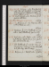Aug. 30. Su.Religion, çala. Mackintosh, çala. Dine at Campbel’s, w. O’Connel, A Cunningham, Williams & Alexr. Vindiciæ Gallicæ, p. 82. 63 / 69
31. M.Heat. Religion, çala. Vindiciæ, p. 161. Gaskel calls twice. Corporation Bill again in Commonse.64 / 70
Sep. 1. Tu.Vindiciæ, p. 262. Macrone, Ainsworth, & Wilson au soir. 64 / 73 ½
2. W.Vindiciæ, p. 357: Northcote, p. 76. Call on Hart, Whitehall Yard, w. M J. 66 / 71
3. Th.Religion, çala. Paley, çala: Vindiciæ, p. 381, fin: Northcote, p. 192. Gaskel ppc; adv. Campbel, sups. 65 / 71
4. F.Hot. Northcote, p. 328, fin. Dine at Macrone’s, w. A Cunningham, Ainsworth & Sir John Key; adv. Ma[c?]ney. 68 ½ / 72 ½
5. Sa.Religion, p. 1. Hazlit, çala. N G at teao67 / 70 ½
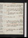Sep. 6. Su.Religion, p. 2/2. Hazlit, çala. M W S & Percy dine: call on Booth. 67 ½ / 71 ½
7. M.Heme. Hazlit, çala: Mirabeau, çala. S Gent & Daniel call: call on Hart, w. M J. 69 / / 71
8. Tu.Mirabeau, çala. Call on Bulley, 5 appointments. 67 / 65 / 69
9. W.Mirabeau, çala. 63 / 72
10. Th.Religion, p. 4/2. Mirabeau, çala. G Jones calls na: M W S & mrs Hogg at tea. Indistinct visione.Corporation Act passed: Prorogatione.67 / 71
11. F.Religion, çala. Mirabeau, çala. Emily dines; adv. Rickmans. 62 / 68
12. Sa.Constipe. Mirabeau, çala. Whitehall Yard, w. Bulley. 64 / 69 ½
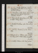Sep. 13. Su.1/2 Constipe. Religion, 2 words. Mirabeau, çala. Dine at mrs Hogg’s, w. M W S & Percy. 63 / 68
14. M.Mirabeau, çala. Emily dines: meet Owen (dance): sup at Reynolds’s. Thornton Huntna. 64 / 70 ½
15. Tu.Tems Sombree. Mirabeau, çala. G Dyer calls na: Percy dines. 67 / 69 ½
16. W.Constipe. Mirabeau, çala: Burnet, p. 369. 66 ½ / 69
17. Th.Gout, M Je. Burnet, p. 404. Wilson sups. 64 ½ / 69
18. F.Religion, p. 4. Siddons, çala. M W S & mrs Hogg dine; sleeps, Hotel, 4 nightse. 62 ½ / 69
19. Sa.1/2 Constipe. Siddons, çala. Emily dines. o65 / 69 ½
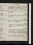Sep. 20. Su.Warm. Inchbald, çala. Dine at L Stanhope’s, w. M W S, Lincoln & miss Vernon; adv. mrs Bulwer. 66 / 71
21. M.Constip. Old Law, acts 1, 2, 3: Inchbald, çala. 65 / 70
22. Tu.Guardian (Massinger), act 1, 2/2: Inchbald, çala. 67 / 75
23. W.Cold. Inchbald, çala. Theatre, Rivals, acts 1, 2, 3; adv. Skeffingtone. 69 / 72
24. Th.Slight Fevere. Inchbald, çala: Holcroft, p. 175. 65 / 71
25. F.1/2 Constip; 2 dosese. Holcroft, p. 300; Vol. II, p. 191. Sir B Stephenson calls, invisible. Chawner & auctioneer, Eversfd. 63 ½ / 68 ½
26. Sa.Tems Sombree. Call on Bulley: Emily dines. Holcroft, p. 283; Vol. III, p. 151. 63 ½ / 70
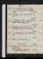Sep. 27. Su.Religion, p. 6. Holcroft, p. 320, fin. Call on Pickens: Wallace calls n. 62 / 66 ½
28. M.Religion, çala. Burnet, Vol. VI, p. 39. 62 / 68
29. Tu.Religion, 3 lines. Burnet, p. 82. Call on Chas Rickman, &c. 61 ½ / 68
30. W.Preface, notes. Moralists, p. 53. Call on Hor. Rodd: Jas Leigh sups; adv. Hudson. 62 ½ / 70
Oct. 1. Th.Moralists, p. 78: Burnet, p. 143. 63 / 69
2. F.Preface, p. 2. Burnet, p. 198. Lots for Auctione.63 / 69 ½
3. Sa.Preface, p. 3/2. Chapman, Od., Book I, II/2: Burnet, p. 266. Reading Chapman, I felt revival & youth—What if Homer?e62 / 69 ½
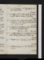Oct. 4. Su.Preface, p. 5. Rasselas, p. 56. Mrs Hogg at tea. 60 ½ / 65
5. M.Preface, p. 6/2: interrupted by Cheesewright. Call on Bulley: N G at tea. 62 / 69
6. Tu.Preface, p. 7/2. Call on Eversfieldn, & mrs Rickman, w. M J: theatre, Road to Ruin, 4 actse. G Jones calls na. 60 ½ / 67
7. W.Preface, p. 8. Chapman, B. II: Burnet, p. 292, fin. Eversfield calls. Rhume, 2 dayse.62 ½ / 70 ½
8. Th.Constipe. Preface, p. 10. Chapman, B. III. Call on Bulley (stop to sale): Wilson sups. 61 ½ / 69 ½
9. F.Preface, p. 11. Rasselas, p. 120. Rain. 60 ½ / 68
10. Sa.Whitehall Yard, w. M J. Rasselas, p. 155, fin. 60 / 66 ½
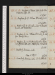Oct. 11. Su.Preface, 6 lines. Life of Sir Tho. Browne, pp. 60. o56 / 65
12. M.Preface, p. 13/2. Xtian Morals, p. 5255 ½ / 68 ½
13. Tu.Preface, p. 14/2. Theatre, Cavs & Roundheads; adv. Barhame. 58 ½ / 67
14. W.Preface, p. 14. Xtian Morals, p. 136, fin. Emily dines. 61 / 71
15. Th.Preface, p. 15. Victoria Theatre, Hamlet, G Jones; adv. Leic. Stanhopes & Martinse. 62 / 68
16. F.Quarterly Review, çala. Fog, 2 days. 61 / 68
17. Sa.Quarterly Review, cala. Seek A White. 61 / 68
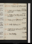Oct. 18. Su.Preface, p. 17. Euphues, çala. 59 ½ / 70 ½
19. M.Preface, p. 18. Theatres, 3/10 Macbethe: Wilson sups. 58 ½ / 65
20. Tu.Preface, p. 19. Emily dines; adv. Kinchant. 58 ½ / 68
21. W.Preface, p. 20. Euphues, p. 20. 53 ½ / 68
22. Th.Constipe. Euphues, p. 63. 55 / 65
23. F.Preface, p. 22/2. Euphues, p. 86. Call on Bulley (Beloe). 57 ½ / 66 ½
24. Sa.New Monthly. o57 ½ / 64
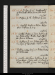Oct. 25. Su.Preface, p. 25. Disappointmt at Whitehalle: Wilson dines; adv. Campbel. 57 ½ / 65
26. M.Preface, p. 28/2. Euphues, p. 100. 58 ½ / 67
27. Tu.Constipe. Books, w. Wilson: Wilson dines. Euphues, p. 136. 56 / 64
28. W.Constipe. Preface, 4 lines. Euphues, p. 141. Wilson dines: theatre, Paul Clifford; adv. Spencer & Elmoree. 53 ½ / 63 ½
29. Th.Euphues, p. 151. Wilson dines: theatre, Siege of Rochellee. Flather calls n. 56 / 64
30. F.Euphues & his Ed, p. 20. Wilson, Books: Jas White calls. 54 ½ / 68 ½
31. Sa.Constip: Lumbagoe. Euphues, p. 39. Wilson dines: G Jones calls n: Victoria, w. Wilson; Macbeth, G Jonese. Hudson calls n. 58 / 66 ½
Nov. 1. Su.Euphues, p. 72. Whitehall, w. M J; adv. Peaks. 59 / 66 ½
2. M.Euphues, p. 96. Wilson dines. 56 / 66
3. Tu.Euphues, p. 115. Wilson dines: Kenney sups. 60 ½ / 64
4. W.Euphues, p. 142. Books, w. Wilson: Mrs Leigh dines. 55 ½ / 62
5. Th.1/2 Constipe. Euphues, p. 170. Whitehall, w. M J: N G at tea. 55 / 64
6. F.1/2 Constipe. Euphues, p. 184. Meet Sheridan Knowles. Move to Whitehalle. 54 ½ / 61
7. Sa.Bookse. Bulley calls. During my residence in Palace Yard, I read through Shakespear with notes.53 ½ / 62
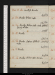Nov. 8. Su.Constipe. BookseC[ ] W[ ]49 / 69e
9. M.Bookse. Wilson calls. Wilson54 / 68 ½
10. Tu.Bookse. Wilson calls: seek A White: Emily at tea. Thermometer changd50 / 66
12. Th.Bookse. Call on A White: Campbel sups. 49 / 55 ½
14. Sa.Bookse. Wilson calls, unseen. 49 / 55
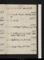Nov. 15. Su.Bookse. Call on Booth50 ½ / 54
16. M.Bookse. Theatre, Rochelle, & Jewesse. Cortes openede49 ½ / 55
18. W.Exchequere. Euphues, p. 193. Bookse. 52 / 57
19. Th.Euphues, p. 202. Bookse. Call on Bulley (Water-closet). 53 / 57 ½
20. F.Euphues, p. 212, fin. Bookse. 53 / 58
21. Sa.Bookse. Mary Cogle, homee. 55 / 60 ½
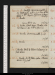Nov. 22. Su.Constipe. Commonwealth, p. 20: M Bombie, acts 1, 2, 3. Dine at Rogers’s, w. Mds Rogers & Johnson, 2 Carys, Sharp. 56 ½ / 59
23. M.Bookse. James White dies . 56 / 59 ½
24. Tu.Bookse. S Gent dines: theatre, 1/2 Inheritance; adv. T Ht & Spencere. 56 / 60
25. W.Bookse. Commonwealth, p. 47. 57 / 61
27. F.Bookse. Write to M W S. Trelawney après diner. 60 / 65 ½
28. Sa.Bookse. Sir M Hale, çala. A Evans dines. M J, Goute. 60 / 63 ½
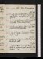Nov. 29. Su.Life of Hale. A Evans dines. 58 ½ / 62 ½
30. M.Life of Rochester. A Evans & Emily call: theatre, Lord of Isles, act 1, 2; adv. Spencere. 58 ½ / 63 ½
Dec. 1. Tu.Sir C Scudamore & M W S call: Emily sups. Maria Howard, homee. 60 / 64 ½
2. W.Exchequer, delivere. Life of Tasso, M W S. Scudamore & Wilson call. 59 / 65
3. Th.Life of Foscolo. Scudamore & mrs Nortonn call. 59 / 63
4. F.Giddinesse. Life of Monti. Wilson, Bookse: Scudamore calls. 57 ½ / 60
5. Sa.Write to Woods & Forests (Chimney). M W S & Scudamore call. Caunter, clergyman, p. 98. o55 / 60
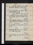Dec. 6. Su.Revise. Caunter, p. 187. Call on Car. Nortonn & Pickens: Emily dines. 55 / 59
7. M.Fog. Caunter, p. 311. Hudson, après diner: Scudamore calls. M J, à l’Etude; 13 dayse.54 / 59
8. Tu.Caunter, p. 358, fin: Life of Alfieri, p. 31. N G calls: call on Car. Nortonn: Emily sups. 53 ½ / 58
9. W.Life of Alfieri. Scudamore calls: theatre, King O’Neil; adv. Spencere. Parricide, p. 64. xIndisposede. 53 ½ / 56
10. Th.Parricide, p. 266. Uwins calls. M W S , do. Snow.51 ½ / 55 ½
11. F.Parridecide, Vol. II, p. 132. Scudamore calls: Emily sups. 49 / 53
12. Sa.Parricide, p. 322, fin. Mrs Jas White calls. 47 / 53
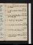Dec. 13. Su.Life of Galileo. Gent & Daniel call. Delevi. 48 / 54
14. M.Life of Guarini. M W S dines; adv. Wilson. 49 / 56 ½
15. Tu.Fog. Life of Chiabrera. M W S breakfasts: Emily sups. 51 / 56 ½
16. W.Thick Fog. Life of Goldoni. 52 / 57
17. Th.Rochester, Funeral Sermon, &c: Laude. 51 ½ / 56
18. F.Rochester, çala: Rienzi, p. 80. 52 / 57 ½
19. Sa.Rienzi, p. 236. Call on Car. Nortonn: Scudamore calls. 53 / 57
Dec. 20. Su.Dark. Bojardo, st. 17: Rienzi, p. 302. Campbel calls: Emily sups. Snow.50 ½ / 55 ½
21. M.Rochester, çala: Rienzi, Vol. II, p. 74. 46 ½ / 51 ½
22. Tu.Bright. Rienzi, p. 212. Call on Rogersn: Emily dines: Trelawney & Wilson sup. 45 / 42 / 55
23. W.Rienzi, p. 364; Vol. III, p. 46. Notes. Ice in Chamber, 5 days. 46 / 54
24. Th.Rienzi, p. 216. 46 / 52 ½
25. F.Notes. Rienzi, p. 356, fin. Dine at mrs Wood’s, w. Leic. Stanhopes, G Jones. Alcala, Hutchinson, Thomas; adv. Macaulay, Sceptic, Boy of Andes. Skaiting. 45 ½ / 50 ½
26. Sa.Cerceau, p. 41. 41 ½ / 50
Dec. 27. Su.Cerceau, p. 102. Dine at Campbel’s, w. Otway Cave, Sigmond, Williams & Alex C. 42 / 51
28. M.Cerceau, p. 175. 43 ½ / 53 ½
29. Tu.Cerceau, p. 222. Percy dines.xNotes. ox5 feet 4 3/4 inchese. 46 ½ / 54 ½
30. W.Cerceau, p. 270. Emily sups. 50 / 58 ½
31. Th.Fog. Delevi.Cerceau, p. 326. A Evans dines. Diarrhoea, 2 dayse. 51 ½ / 47 / 56 ½
Contact --  -- Cookies/Privacy
-- Cookies/Privacy